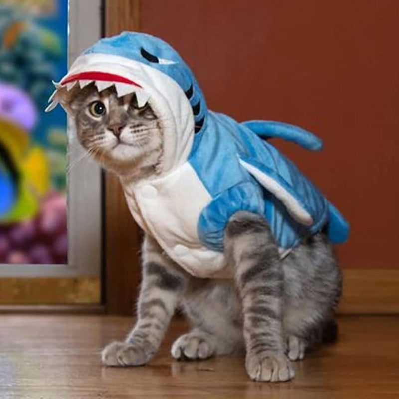

220820-220821
HTML
CSS
JavaScript
백엔드 취뽀를 목표로 공부 시작!
생활코딩 web1부터 차근차근 공부중.
아니 근데 벌써 헷갈리는거 나오네

220821 ~문서의 구조와 슈퍼스타들 까지 공부 완!
220822_HTML 태그의 제왕
링크걸기 공부함
내 블로그 소개~
220824_웹사이트 완성
WEB
HTML
CSS
JavaScript
HTML
예시